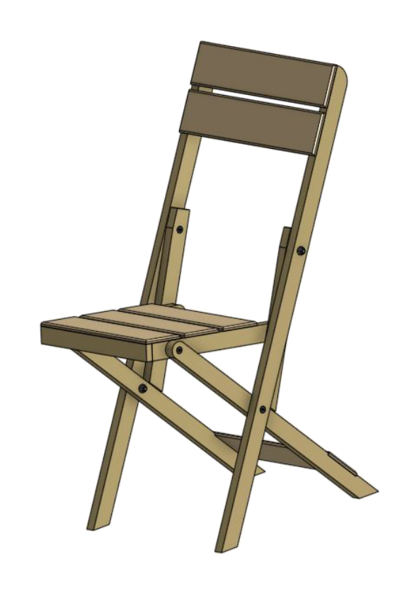
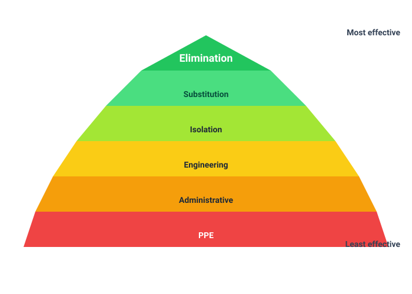

Identify the exact product
Different coatings and solvents have different hazards, controls and curing requirements.
Industrial Technology – Timber
Weeks 15–16: Chemical safety, Safety Data Sheets, polishing, sustainability and product life cycle

Your work
Your entries save automatically in this browser. Use Print / Save PDF before leaving the page.
Two-week roadmap
Use labels and Safety Data Sheets to plan chemical work, select controls through the hierarchy, explain compatible polishing and evaluate the chair through a whole-of-life sustainability lens.
Theory 1
The product label identifies what the chemical is, how it is intended to be used and the most important immediate precautions. The Safety Data Sheet provides the fuller technical information needed to plan storage, handling, emergency response and disposal.
Under the Globally Harmonized System, hazard information may include pictograms, a signal word such as Danger or Warning, hazard statements and precautionary statements. A pictogram does not replace reading the words. One product can have several hazards—for example, a solvent may be flammable and also harmful through inhalation or skin contact.
Do not transfer a chemical into an unlabelled drink bottle or another misleading container. Keep the product in its approved labelled container unless a school procedure requires a correctly labelled working quantity. Lids must be replaced promptly, and ignition sources must be controlled where flammable vapour is possible.
Different coatings and solvents have different hazards, controls and curing requirements.

A symbol is a prompt to read the full hazard and precaution information.

The filter type, fit and school procedure must match the product and exposure.

The SDS identifies suitable glove material; ordinary workshop gloves may be inappropriate.
Theory 2
An SDS is organised into 16 standard sections. The structure allows users to find information quickly rather than reading every page from the beginning during an emergency. The SDS should match the exact product and supplier and should be accessible where the chemical is used.
If finish splashes into an eye, Section 4 is the immediate reference. If a spill occurs, Section 6 is relevant. To plan ventilation and gloves before starting, use Section 8. To decide where and how a product is stored, use Section 7 and check Section 10 for incompatibilities.
The included turpentine document is a classroom example supplied with the Construction resources. For real work, use the current SDS for the exact product held by the school.
Theory 3
The hierarchy ranks risk-control approaches from more effective to less effective. Elimination removes the hazardous chemical or task. Substitution replaces it with a less hazardous product. Isolation separates people from exposure. Engineering controls change the physical environment, such as local exhaust ventilation. Administrative controls include procedures, training, scheduling and signage. PPE is worn by the person and is the final layer.

| Control level | Finishing example | Limitation |
|---|---|---|
| Substitution | Use an approved lower-hazard product that still meets the brief. | The substitute still requires its own label and SDS assessment. |
| Isolation/engineering | Use the designated finishing area with effective extraction and controlled access. | Ventilation must be operating and appropriate for the product. |
| Administrative | Follow the finishing procedure, restrict quantities, label containers and schedule adequate cure time. | Procedures fail if they are ignored or unclear. |
| PPE | Use specified eye, skin or respiratory protection. | It must be compatible, correctly fitted and maintained. |
Spills, fire and exposure are handled through the school emergency procedure and the SDS. Students should alert the teacher, keep others away and avoid improvising with unknown absorbents or clean-up methods. Contaminated rags and residues may present fire or environmental hazards and must go into the specified waste system.
Theory 4
Polishing may mean lightly refining a cured coating, applying a compatible wax or maintenance product, or cleaning and restoring sheen. The exact method depends on the finish system. A product that works on one coating can soften, contaminate or reduce adhesion on another.
The coating must be fully cured to the stage required before polishing pressure is applied. Work with clean, soft materials and avoid building residue in joints or moving faces. Silicone-containing or unknown products can complicate future refinishing. The safest method is the simplest compatible maintenance recommended for the selected coating.
Theory 5

Timber can be renewable, but sustainability also depends on forestry management, transport, processing energy, product yield and the chair’s useful life. Certified or responsibly sourced timber provides stronger evidence than a general claim that “wood grows back”. Selecting straight material for long members and using shorter defect-free sections for small parts can reduce waste.
Manufacturing choices matter. Accurate cutting lists and templates improve yield. Dust extraction protects health and allows appropriate waste handling. Lower-hazard, lower-emission finishes may reduce chemical impact if they still provide adequate durability. A weak product that must be replaced quickly may use more resources than a durable product with a slightly higher initial material cost.
Species, certification, transport distance and supplier evidence.
Material yield, energy, waste, dust, coatings and rework.
Durability, maintenance, indoor conditions and user behaviour.
Repair, disassembly, reuse, recycling and responsible disposal.
The folding chair uses mechanical pivot hardware that can be inspected and replaced. This supports repairability, provided the timber around the holes remains sound and the hardware is standard and accessible. Permanent fixed joints may provide strength, while replaceable hardware allows maintenance where movement causes wear.
Theory 6
A life-cycle evaluation asks where the largest realistic impacts occur and which design decision can improve them. Making the chair lighter may reduce material and carrying effort, but over-thinning could shorten service life. A highly durable finish may reduce maintenance but involve more hazardous application. The best choice is justified in relation to the intended use and available controls.
The waste hierarchy also guides workshop decisions: avoid unnecessary material first, then reduce, reuse and recycle where practical, and dispose only what cannot be recovered safely. Chemical residues and contaminated materials are not treated like clean timber offcuts.
Guided practice
Each incorrect option explains the misunderstanding. Use the hint, return to the theory and keep trying until the question is mastered.
Apply your learning
Write a genuine first attempt, check the live guidance, compare with the appropriate response example and improve your explanation before self-assessing.
Finish the two-week block
Your answers save in this browser as you work, but browser storage is not the official submission. Save the completed page as a PDF before closing it.
No marks, answers or personal information are sent from this webpage.